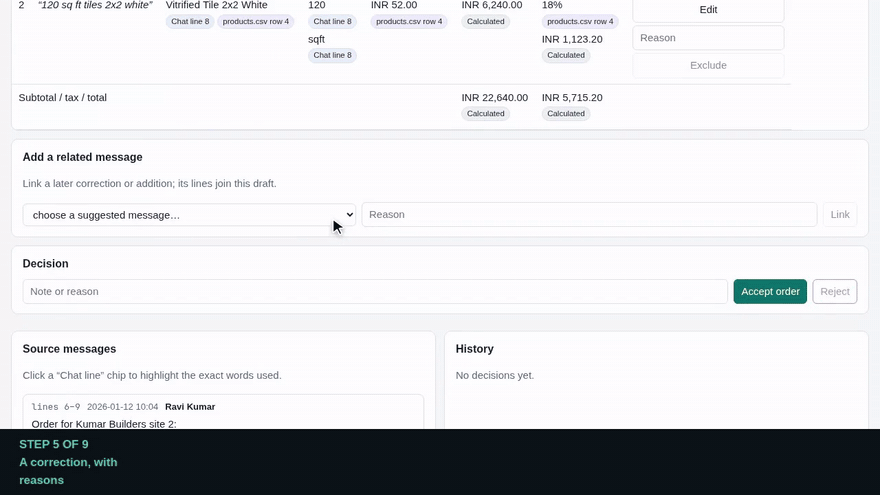
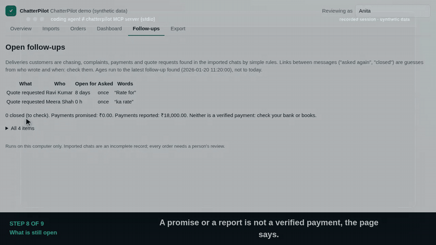

WhatsApp order messages become source-linked drafts that a person checks and exports.
0:00
Captions (select one to jump there)
Keys: Space play or pause · ← → chapters · M music. Link to a chapter with #05-correction.
Music: “Hypnotic Chill” by cynicmusic, CC0 (details).
Why it is built this way
Each claim names the test in the repository that checks it.
Try it
Node.js 26+ and pnpm 12. Everything runs on your computer with invented data.
More agents and the full tool list: docs/harnesses.md. The agent tools can draft and propose edits; none can accept an order.
Short clips
Silent loops for the README and captioned clips with music for sharing.
The idea in 25 seconds

A correction, with reasons

A coding agent, with limits
Vertical clip with music
Help shape it
This is an early, honest prototype. The most useful things you can do:
- Run the demo and tell us what confused you or broke, in a GitHub issue.
- Describe how orders reach your shop or your clients (with invented examples, never real chats).
- Point your coding agent at it and share what it built. Star the repository if it was useful.